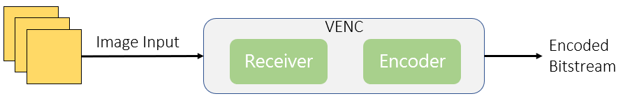
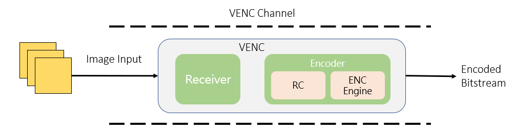
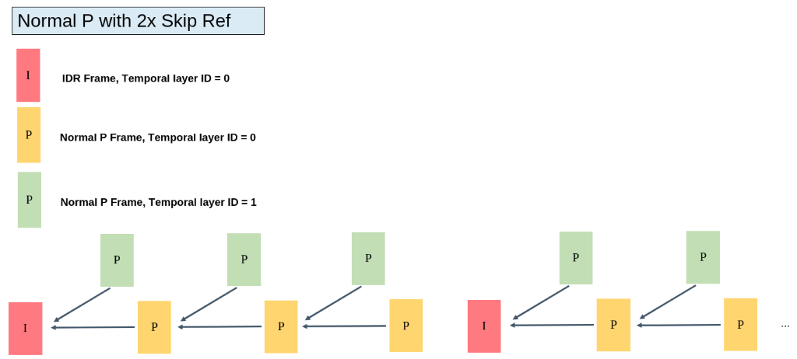
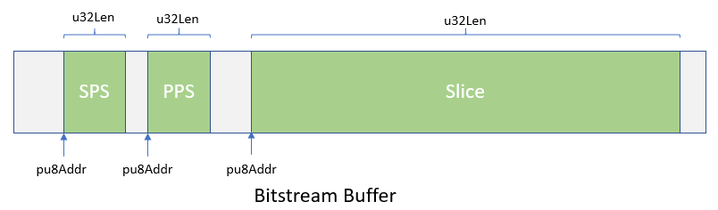

7.2. Design Overview¶
7.2.1. EncodingDataflowFigure¶
{kind=link}

VENCModuleInputispendingEncodingimage, OutputisEncodingafterBitstream. VENCcontainshastwoModule, ReceiverandEncoder.
Receiver
ReceiveimageInput
Encoder
willreceivetoimageperform imageandVideo Encoding, Conversion Encoded Bitstream, The currently supported video standards are
JPEG
Supported image formats are
YUV422
YUV420
NV12 / NV21
MJPEG
SupportimageFormatandJPEGsame
H.264
Supported image formats are
NV12
H.265
Supported image formats are
NV12
7.2.2. Video Encoding Channel¶
{kind=link}

Video Encoding ChannelisVideo Encodingthisoperationsingle, internalmainincludingVENCRelatedFunction, ChannelRelatedSet. systemoncanhasmultipleVideo Encoding Channel, eachChanneloperation. eachChannelcreateafter, UsercanRequirementsSetChannelthisParameter, ifimageresolution, Encoding Bitrate, RCetc., RelatedParameterwillforVENCInitialize.
7.2.3. Rate Control¶
RCisEncoderMediumControlBitrateandVideo QualitymainModule, mainbyeachstandardinQPitemParameter, oneControlimagequality, When QPtime, EncodingtoDatawill, butVideo Qualitywill; When QPtime, EncodingtoDatawill, butVideo Qualitywill.
Video EncodingwillwithRCat the same timeoperation, If isimageEncoding (if JPEG), becauseonlyhassingleframeimage, notwillneed tothisModule.
Mode | JPEG | H.264 | H.265 |
Fixed QP | Support | Support | Support |
CBR | Support | Support | Support |
VBR | Not supported | Support | Support |
AVBR | Not supported | Support | Support |
7.2.4. Fixed QP¶
instatisticstimein, imageinthehasMBUsesameaQPvalue.
7.2.5. CBR¶
CBR (Constant Bit Rate) fixedBitrate, dynamicControlQP, make Encoded Bitstream inSettimeregionin, in bitrate.
mainParameteras follows:
u32StatTime Bitratestatisticstime
- Unittimeisseconds (second), encoderwillinSettimeinstatisticsBitratewhileadjustimagequality, descriptorcombinedBitrate.When thisvaluetime, statisticsregion, imagequalitywillRelativelarger,eachoneframe Frame Compressioncompleteafter, forconnectundertoCompressionhaslargeraffect, qualitycomparenotstable.thisvaluetime, statisticsregion, eachoneframeFrameCompressioncompleteafteraffectlevelsmaller, imagesmaller, qualitycomparestable.
7.2.6. VBR¶
VBR(Variable Bit Rate) canBitrate, BitrateinSetstatisticstimein, dynamicadjustbodyBitrate, canmakeimagequalityRelativestable.
u32MaxBitRate MaximumBitrate
Set the maximum usable bitrate during the statistics period
u32MinQp
SetMinimumcanUse MB QP, limitimageoptimalquality, notwillUseheightBitrate
7.2.7. AVBR¶
AVBR(Adaptive Variable Bit Rate)autoshouldcanBitrate. scenemotionleveldynamicadjuststatisticstimeDestinationBitrate, Rate Controlinternalscenemotionleveldetermine. scenemotionlevellarger, DestinationBitrateheight, whileWhen scenetostatictime, willautomaticlowDestinationBitrate.
u32MaxBitRate MaximumBitrate
Set the maximum usable bitrate during the statistics period
u32MinStillPercent
scenestaticStatustime, DestinationBitratewithMaximumBitrateof
MinBitrate = MaxBitrate*ChangePos*MinStillPercnet
According toscenemotionlevel, DestinationBitrateinMinBitratewithMaxBitratetuning
U32MaxStillQp
scenecompletelystatictime, maxQptoMaxStillQp. withstaticsceneimagequality.
7.2.8. GOP Structure¶
H.264 and H.265 For GOP StructureSupportstatusas follows.
GOPMode | H.264 | H.265 |
|---|---|---|
NormalP | Support | Support |
SmartP | Support | Support |
NormalPGOP Structureas follows
IDR Frameappearis u32Gop

SmartPGOP Structureas follows
VIFrameappearisu32Gop, thisFrameonlytobeforeReferenceofIDRFrame
IDRFrameappearisu32BgInterval, this IDR FrameisReferenceFrame


7.2.9. Advanced Frame Skipping¶
H.264 and H.265Support1times, 2times, and4frame-skipping reference mode. defaultis1times(notFrame).
2frame-skipping reference modeas follows
{kind=link}

7.2.10. ROI¶
ROI (Region Of Interest) Encoding: RegionEncoding.
UsercanthroughConfiguration ROI Region, tuningthisRegionImage Qp, implementImageinRegion.
H.264 and H.265Support 8 item ROI Set, repeatRegionaccording to 0～7 ROIIndexnumbersecondaryprovideheightfirstlevel
ROI RegioncanConfigurationAbsoluteQpandRelativeQptwoMode.
AbsoluteQp Mode: ROI RegionQpisUserSet Qp value.
RelativeQpMode: ROIRegionQpisRate ControlofQponUserSetQpvalue.
Precautions
When Rate ControlModenotisFixed QPModetime, ROIRegioncanConfiguration.
H.264When ROIcantime, Macroblock-LevelRate Controleffective.
AbsoluteQpModebecauseRate ControltuningmacroblockQP, actualEncodingQPwithSetofQPcancanwillhas.
7.2.11. EncodingBitstreamFrameConfigurationMode¶
CompressionafterEncodingBitstream, UseCVI_VENC_GetStreamGetEncoded Bitstream, RelatedInformationas follows:
u32PackCount
- thisframeFramecontainshasmultipleitemNAL packet,For examplebeforeCompressionFormatisH.264, firstframe isI frame, thisvaluewillis 3 (containsSPS, PPS, 1 Slice),secondframeFrameis 1(contains1 Slice).
pstPack
- According tou32PackCountQuantity, willcontainshaspstPack[0] ~ pstPack[u32PackCount - 1] data.iffirstframeI Frame, willhaspstPack[0], pstPack[1], pstPack[2]
underFigureisfirstframe I FrameBitstreamdata
{kind=link}

7.2.12. multipleEncodingdeviceandEncoding¶
H.264 and H.265 Supportmultiple channelsEncoding, beforedefaultmultipleis 8 andEncoding, withunderisPrecautions
Encodingbodyeffectivecanneed tolower thanHardwaresetlimit, exceedswillNonemethodreachSetframerate
theneed toFrame Bufferwillwithnumberincreasecurrentlyincrease, DRAMUseofincrease
7.2.13. Encoded Frame Buffer Calculation¶
EncodingFramecache (ReferenceFrameandFrame) allocateSupporttwoMethod: PrivateVB poolMethodand UserVB poolMethod. Encoding PrivateVB poolMethod: CreateEncoding channeltimeby VENC CreatehasVBpoolisthisChannelReferenceFrameandFrameBuffer. EncodingUserVBpoolMethod (only H.264/H.265 EncodingSupport): CreateEncoding channeltimenotallocateReferenceFrameandFrameBuffer, whileisbyUserCallInterfaceCVI_VB_CreatePool
Create a VideocacheVBpool, thenthroughCallInterfaceCVI_VENC_AttachVbPoolitemEncoding channelBindtofixedVideocacheVBpoolin. twoMethodcanthroughCall CVI_VENC_SetModParamInterfaceSetshouldModuleParametertoselect. ModuleParameterSetis VB_SOURCE_PRIVATEmeansUseEncodingPrivateVBpoolMethod; Setis VB_SOURCE_USERmeansUseEncodingUserVBpoolMethod.
UserVBModeunder, EncodingFrameMemoryMaximumvalueReferenceas follows
H.264 | H.265 | |
|---|---|---|
FrameSize | (align(width,32)) x (align(height,32)) x 1.5 x 2 | align((width x height x 1.5), 4096) x 2 |